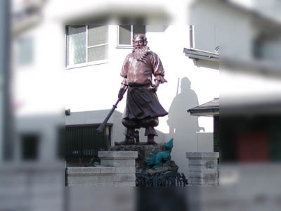
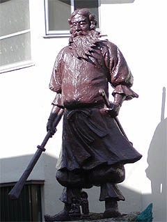
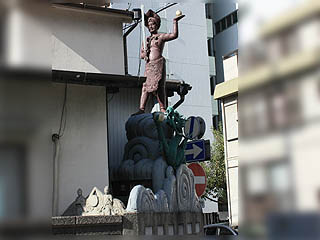
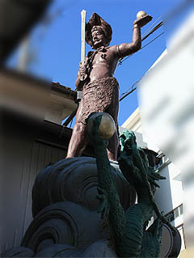
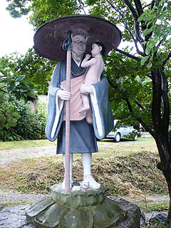
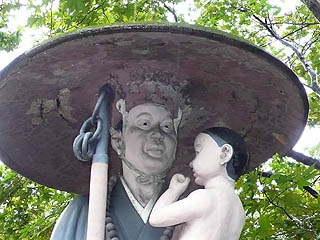
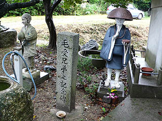
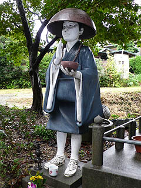
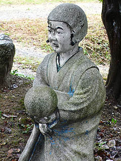

浅野祥雲は我々に何を残したのか
浅野祥雲伝説、最後は浅野祥雲師の自宅の話で締めたい。
かれこれ浅野祥雲作品との出会いは都築響一御大の珍日本紀行に掲載されていた桃太郎神社を訪れた事が発端だった。
そのころは勿論浅野祥雲という人物の名前など知らずにいた。
その後、五色園を訪れ、愛知にはコンクリ像が多いなあ〜、と漠然と思っていた矢先、浅野研究の大御所、大竹敏之氏の名著、「名古屋真相追Q局」で浅野祥雲師の存在を知ったのであった。
そこに書かれていた浅野宅にかなり心惹かれていたある日、名古屋出身の知人の
「それって俺のおっかあの実家のすぐ近くですよ」
との衝撃発言。
早速、所在を聞いて浅野宅訪問と相成ったのである。

事前に聞いていた場所を地図で確認するまでもなく、いきなり巨像がお出迎え。
嗚呼、ごくごく普通の住宅街に聳え立つコンクリ像のインパクトたるや。

前出の知人の談によれば、浅野師が存命だった頃は庭にみっしりコンクリ像が並んでいてコドモ心にも凄い光景だったそうだ。
彼の記憶によるとウルトラマンとかそんな感じのモノもあったようななかったような…だそうで。
ここで家人の方に遭遇。
浅野師のファンである由を告げ、色々とお話を伺った。
何でも資料が無くなってしまい、お身内の方も作品の行方等分からない、とのことであった。
実はこの時、熱田神宮（のどこか）にコンクリ像がある、という話を聞いたのだが、今考えるとそれが秋葉山円通寺の毘沙門天だったのかも知れない。
 
住宅の角にも宝剣と宝珠を持った神像が立っている。
足元の波形や龍の造形は他の浅野作品を鑑賞する上でとても重要なファクターであるため、特に念入りに拝見した。
で、前述の知人のおっかあの話では五色園に大八車を曳いて作品を運んでいたハナシが今でも近所の武勇伝として残っているそうな。
愛知県を日本有数の珍寺大帝国たらしめた、数多くの傑作コンクリ像の発信基地も今はこの２体（とその下の祠にある小品）を残すのみとなっている。
何とも寂しい限りだが、浅野祥雲師のコンクリ像作家としての生涯を偲ぶには充分過ぎる程の秀作である。
さて、ｗｉｋｉの浅野祥雲の項目を見ると、豊明の身代わり弘法が浅野作品である、との記述がある。
勿論、行ってみた。
実見してみると、コレはチョット違うんじゃないかなあ〜
 
コドモを抱いた身代わり弘法というコンクリ像。
衣の処理、全身のプロポーション、そして顔の造作が浅野作品とは思えない、というかもすこし上手。
隣には毛受兄弟の記念碑とある。

こちらにも同じ作者によるものと思われるコンクリ像が2対並んでいる。
 
身代わり弘法大師の石碑を見ると昭和58年建立とある。
浅野師が亡くなったのが昭和53年であるから、このコンクリ像が浅野作品である可能性はないのである。
ただし、造形はかなりの腕前なので、これはこれでコンクリ像としては一級品といえよう。
このコンクリ像を作った人物が誰なのかは大いに気になるところである。
あともうひとつ、ｗｉｋｉに南知多町の軍人墓地のコンクリ像の作者が浅野祥雲師だと記されている。
これについては、私自身確信がもてないのと諸々解決したい情報が交錯しているのでとりあえず保留、ということにしておいてください。
さて。
浅野祥雲師がこの世を去って３０年、そろそろ浅野作品とは何なのかを検証する時期に来ているのではなかろうか。
と、同時に浅野作品を語る上で欠かせないコンクリートの塑像の意義も考えなければなるまい。
コンクリートのメリットはコストが安く、工期が短いことだ。しかも原料の石灰石は国内自給率ほぼ100％。
と、同時に造形の自由度と屋外での耐久性も持ち合わせている。
…と書けば良いことづくしなのだが、その反面、細部の作りこみは比較的苦手だし、屋外では黒ずんだり劣化したり。
まあ、このサイトの読者であればコンクリ像の特性はイヤというほど知ってますね。
木像や石像、ブロンズ像といった塑像が芸術作品として扱われるのに対してコンクリ像は作った時点で芸術の範疇から外れてしまう、というかお笑いの対象にすらなりかねない冷遇っぷり。
今回見てきた浅野作品の数々をすべて思い浮かべるまでもなく、どこかアンニュイで脱力感に満ちた数多くのコンクリ仏像（や神像）たちにはハッキリ言って芸術性のかけらもない。それでも私はあえて浅野師の作り上げてきたコンクリ像を「作品」と呼びたい。
明治時代にフェノロサが法隆寺の救世観音のヴェールを剥いで以来、日本の仏像は西洋的美術史観によって芸術性をまとわなければならない存在となってしまった。本尊格の仏像はもちろんのこと、堂内にある全ての仏像、門前の仁王像、庭の石仏、挙句の果てには路傍の石仏においてまで芸術作品としての対象物となってしまった。
昨日まで護摩で真っ黒になっていた仏像も国宝に指定されれば、煙まみれなんてとんでもない、コンクリの収蔵庫に入れて湿度計ぶら下げて保存、保管。おびんずるさまなんて文化財になっちゃったら誰も撫でられなくなっちゃう。
仏像はいつの間にか従来の信仰的側面を越えた価値観を持つようになってしまった。
本来であれば二次的な要素である芸術性のある仏像の存在を強調することで宗教的権威を誇示する寺院もある。
つかそんなとこばっか。
しかし
浅野作品はそんな図式から、完全に解き放たれているのだ。
公園の遊具よろしくペンキ塗りされたコンクリ仏像からは芸術性はキレイさっぱり流れ落ち、ついでにいえば宗教的権威もゼロ。そう、そこには「芸術」や「権威」という付加価値から解放された「純粋塑像」としての仏像が存在しているのだ。
仏像に付随した余計な価値を一回リセットして、改めてゼロから「仏像とは何なのか」を考えさせる装置として浅野作品があるのではなかろうか。
思えば浅野作品はその多くが個人の霊場やあまり歴史のない寺、歴史のない城などに設置されている。
決して公園や駅前のロータリーや役所のロビーに設置される類のものではないし、歴史のある名刹におさまるガラじゃない。
あまり人々に認められず、どちらかというと半笑いされてしまう弘法大師や不動明王たち。
でもそれでいいじゃないか。
街角にあって近所のオバチャンがふらりと訪れて嫁の愚痴などを言いながら手を合わせていく、そんな身近でライトな仏像こそが浅野作品の真骨頂なのだから。
そんなコンクリ仏を黙々と生み出していった師の生き様を俯瞰したとき、それはそれでやっぱり偉大なことだったんだ、と私は確信している。
…と、いうわけでだらだら続いた浅野祥雲伝説はここらでひとまず中締め、ということで。
（また新たに浅野作品を見つけたらその都度お知らせしていきますのでヨロシク）
珍寺大道場 HOME